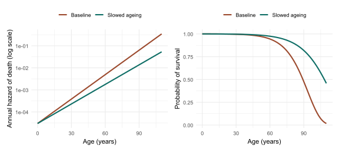
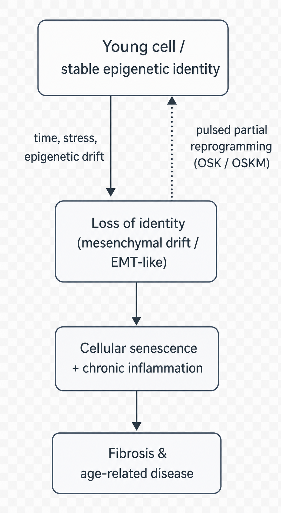

Everyone knows what ageing is until they are asked to define it. This opening chapter turns a universal experience into a researchable object — naming what ageing is, measuring how it unfolds, surveying why it might happen, and introducing the idea that gives the book its title: that ageing may be, in part, a loss of biological information that can be written back.
Saint Augustine, troubled by the nature of time, confessed that he knew perfectly well what time was until someone asked him to explain it, whereupon the knowledge dissolved. Ageing has the same slippery familiarity. We recognise it instantly in a face, a gait, a medical chart; yet the moment we ask why organisms must grow old and die — whether ageing is a programme, an accident, or merely the absence of perfect repair — even the field’s leading figures give strikingly different answers. A serious science of ageing therefore has to begin by doing something deceptively difficult: converting a thing everyone has felt into a thing that can be defined, measured and, eventually, acted upon.
This chapter does that groundwork. It separates ageing from the neighbouring ideas it is constantly confused with; it shows that ageing has a characteristic quantitative shape; it reviews the main explanations on offer; and it introduces the organising framework of contemporary research — the view that ageing is a small number of interlocking biological processes rather than an inscrutable fate. It ends by previewing the claim that runs through the whole book: that some of those processes can be slowed, and at least in animals partially reversed, because what they damage is not only the body’s hardware but its information.
1.1 A word that resists definition
Part of the confusion around ageing is lexical. The single English word does duty for several distinct ideas, and untangling them is the first task.
The most basic distinction is between chronological age — time elapsed since birth, an unambiguous bookkeeping fact — and biological age, the functional state of an organism’s tissues relative to others of the same species. Two people born on the same day can differ by a decade or more in the integrity of their blood vessels, immune systems or kidneys. It is biological age, not the calendar, that the science of ageing seeks to understand and the medicine of ageing hopes to bend. Much of Section 3.3 (the chapter on ageing clocks) is concerned with how biological age can actually be measured; for now the point is simply that the two are not the same.
A second distinction is between ageing as a whole-organism process and senescence as a cellular state. In ordinary usage “senescence” is a synonym for growing old. In cell biology it has a precise and rather different meaning: a stable arrest in which a cell permanently stops dividing yet refuses to die, and begins secreting a cocktail of inflammatory signals. These two senses are related — the accumulation of senescent cells is one driver of organismal ageing — but they are not identical, and conflating them is a frequent source of error. The cellular meaning is the subject of Section 4.2.
The third and most consequential distinction is between ageing and disease. Cancer, type 2 diabetes, Alzheimer’s disease, heart failure and osteoarthritis are different illnesses with different mechanisms, but they share one overwhelming risk factor, and it is not smoking, obesity or family history. It is age. The incidence of most chronic diseases rises steeply, often exponentially, across the later decades of life (Marei, 2025). This observation — that ageing is the common soil from which the major diseases grow — is the empirical seed of the whole field, and we return to it below.
NoteKey concept — healthspan versus lifespan
Lifespan is how long an organism lives. Healthspan is how long it lives in good health, free of serious disease and disability. The two can be pulled apart: an intervention might add frail, dependent years (extending lifespan but not healthspan) or compress illness into a shorter window at the end of a normal life (extending healthspan with little change in lifespan). The responsible ambition of ageing research is healthspan first. The book returns to this distinction repeatedly, because it is where good science and marketing most often part company.
With these separations in place, a working definition can be offered. Ageing is the time-dependent decline in the function and resilience of an organism, expressed as a rising probability of disease, disability and death. The decline is not the failure of any single organ but a coordinated drift across many systems at once — which is precisely why it has proven so hard to explain with any one mechanism (Kok et al., 2025; Tartiere et al., 2024).
1.2 Ageing as a phenomenon: what changes, and how fast
Before asking why we age, it helps to characterise the phenomenon quantitatively, because ageing has a remarkably regular mathematical signature.
In 1825 the British actuary Benjamin Gompertz, working for life-insurance companies that needed to price risk, noticed that the human death rate does not rise linearly with age but roughly exponentially: after early adulthood, the probability of dying in the next year increases by a near-constant percentage each year (Gompertz, 1825). The rate at which mortality climbs can be summarised by a single, intuitive number — the mortality-rate doubling time, the interval over which one’s annual risk of death doubles. For adult humans this is roughly eight years, which is why risk that seems negligible at thirty becomes formidable by eighty.
Figure 1.1 makes the law concrete and uses it to illustrate the book’s central distinction. The simulation models a baseline human-like mortality curve and a hypothetical intervention that does not cure any specific disease but simply slows the Gompertz rate itself — the kind of effect a true ageing therapy would produce. The result is not merely a rightward shift of death but a change in the shape of the survival curve: it becomes more rectangular, with more of the population surviving in good order until later, then declining over a narrower window. This “rectangularisation” is the quantitative face of the compression of morbidity, an idea proposed by James Fries (Fries, 1980) and arguably the single most important goal of the field.
Show the simulation code
library(ggplot2)# Gompertz hazard and survival functionsgompertz_hazard<-function(age, a, b)a*exp(b*age)gompertz_survival<-function(age, a, b)exp(-(a/b)*(exp(b*age)-1))age<-seq(0, 110, by =1)a0<-3e-5# baseline mortality coefficientb0<-0.085# baseline Gompertz rate -> doubling time log(2)/b0 ~ 8.2 yearsb1<-0.068# "slowed ageing": a ~20% slower Gompertz ratedf<-data.frame( age =rep(age, 2), scenario =factor(rep(c("Baseline", "Slowed ageing"), each =length(age)), levels =c("Baseline", "Slowed ageing")), hazard =c(gompertz_hazard(age, a0, b0), gompertz_hazard(age, a0, b1)), survival =c(gompertz_survival(age, a0, b0), gompertz_survival(age, a0, b1)))pal<-c("Baseline"="#9C4A2E", "Slowed ageing"="#0F6E66")p_haz<-ggplot(df, aes(age, hazard, colour =scenario))+geom_line(linewidth =1)+scale_y_log10()+scale_colour_manual(values =pal)+labs(x ="Age (years)", y ="Annual hazard of death (log scale)", colour =NULL)+theme_minimal(base_size =11)+theme(legend.position ="top")p_surv<-ggplot(df, aes(age, survival, colour =scenario))+geom_line(linewidth =1)+scale_colour_manual(values =pal)+labs(x ="Age (years)", y ="Probability of survival", colour =NULL)+theme_minimal(base_size =11)+theme(legend.position ="top")# Mortality-rate doubling times implied by the two scenariosmrdt<-round(log(2)/c(Baseline =b0, `Slowed ageing` =b1), 1)# Display the two panels side by side if 'patchwork' is available,# otherwise fall back to the survival panel alone.if(requireNamespace("patchwork", quietly =TRUE)){patchwork::wrap_plots(p_haz, p_surv, ncol =2)}else{p_surv}

Figure 1.1: The Gompertz law of mortality and the logic of slowing ageing. Left: the annual hazard of death rises roughly exponentially with age (note the logarithmic vertical axis, on which exponential growth appears as a straight line). Right: the corresponding survival curves. A hypothetical intervention that lowers the Gompertz rate (rather than treating one disease) does not merely postpone death — it rectangularises survival, the quantitative signature of a compressed period of late-life illness.
The implied doubling times in the simulation are about 8.2 years at baseline and 10.2 years under the slowed-ageing scenario — a modest-sounding change in a single parameter that nonetheless reshapes the whole trajectory of a life. This sensitivity is encouraging for the field’s ambitions and sobering for its rhetoric: small, genuine shifts in the rate of ageing would matter enormously, but they are also easy to overstate.
The phenomenon also has a striking historical dimension. A century ago, human life expectancy in the wealthy world sat between fifty and sixty years; today it exceeds eighty in many countries. Crucially, the human genome — the DNA sequence inherited at conception — is essentially the same as it was a hundred years ago. The dramatic change in how long we live has therefore been driven not by our genes but by our environment and, mediating between the two, by the epigenome: the layer of chemical marks that sits on top of the DNA and controls which genes are switched on, where and when. That the epigenome, not the genome, is the principal lever of recent gains in longevity is a clue we will follow throughout the book, and it is no coincidence that the most radical rejuvenation experiments act on exactly this layer (Ciaglia et al., 2025; Sen et al., 2016).
1.3 Why do we age? Four classic answers
If ageing is the phenomenon, what is its cause? The history of the question is littered with theories, and it is worth distinguishing two senses of “why”. The mechanistic or proximate question asks what molecular events make an old cell different from a young one. The evolutionary or ultimate question asks why natural selection permitted ageing to exist at all, given that it reduces survival and reproduction. Good answers to one do not substitute for the other; a complete account needs both. Table 1.1 summarises the principal classical answers.
Table 1.1: Classical theories of ageing, by the kind of explanation they offer.
Theory
Core claim
Sense of “why”
Status today
Wear-and-tear / rate-of-living
Organisms wear out from use; faster metabolism means a shorter life
Mechanistic
Largely superseded; too simple
Free-radical / oxidative damage
Reactive oxygen species accumulate and damage cells (Harman, 1956)
Mechanistic
Partly true but insufficient; antioxidant trials disappointing
Genes good for early life can be harmful late (Williams, 1957)
Evolutionary
Strongly supported
Disposable soma
Limited energy is split between repair and reproduction (Kirkwood, 1977)
Evolutionary
Influential synthesis
The earliest scientific ideas were mechanistic and intuitive: organisms simply wear out, like machines, and creatures with faster metabolisms burn through their allotted vitality more quickly. The free-radical theory, proposed by Denham Harman in 1956, gave this intuition a chemical form: the reactive by-products of normal metabolism, he argued, slowly damage the molecules of the cell, and that accumulated oxidative damage is ageing (Harman, 1956). The theory was enormously productive, but it has not survived contact with the evidence in its strong form — large trials of antioxidant supplements have generally failed to extend healthy life, and in some cases harmed it, a cautionary tale we revisit when we examine discarded paradigms in Section 11.1.
The deeper insight came from evolutionary biology, and it resolves an apparent paradox: if ageing is so harmful, why has selection not eliminated it? The answer, developed by Peter Medawar, George Williams and Thomas Kirkwood, is that the force of natural selection weakens with age. In the wild, most organisms die of predation, cold or starvation long before they grow old, so there is little selective pressure to maintain a body in perfect repair into late life. Medawar argued that harmful mutations whose effects appear only late would therefore accumulate, invisible to selection (Medawar, 1952). Williams added a sharper twist — antagonistic pleiotropy — noting that a gene which boosts early survival or fertility could be favoured even if it caused damage later, because selection cares far more about the early benefit (Williams, 1957). Kirkwood’s disposable soma theory unified these ideas in the currency of energy: an organism has finite resources to divide between reproduction and bodily maintenance, and natural selection tunes the balance towards reproduction, leaving the body (“soma”) only as well-maintained as it needs to be to reach the next generation (Kirkwood, 1977).
ImportantAnalogy — the hire car
The disposable-soma idea is easier to grasp through an imperfect comparison. Imagine you hire a car for a journey you are almost certain not to finish, because the road is dangerous and most travellers do not arrive. How much would you spend maintaining the engine? Rationally, only enough to give you a good chance of reaching the point where most journeys end — not a penny more on a gearbox that will, statistically, never be used. Evolution “maintains” the body on the same logic: lavish repair is wasted on a soma that predators or accidents will probably claim first. Ageing, on this view, is not a programme to end life but the predictable consequence of under-investment in repair. The analogy breaks down — bodies are not rented, and there is no driver making decisions — but it captures why selection tolerates decline.
A mechanistic landmark sits alongside these evolutionary arguments. In 1961 Leonard Hayflick and Paul Moorhead showed that normal human cells, far from dividing indefinitely in culture, stop after a finite number of divisions — the Hayflick limit(Hayflick & Moorhead, 1961). This overturned the prevailing belief that cells were intrinsically immortal and located a clock-like process inside the cell itself, later traced to the progressive shortening of the protective caps on our chromosomes (the subject of Section 4.1). Together, the evolutionary and cellular strands point to the same conclusion: ageing is neither a curse nor a tightly programmed countdown, but what happens when the machinery of maintenance, never built for indefinite use, gradually loses its grip.
1.4 From many theories to one framework: geroscience and the hallmarks
A discipline cannot operate with a dozen competing theories and no shared vocabulary. The decisive move that turned ageing research into a tractable, fundable science was the consolidation of these strands into a single working hypothesis and a single catalogue.
The hypothesis is geroscience: the proposition that, because ageing is the dominant shared risk factor for the major chronic diseases, the most efficient way to delay those diseases is to target the biology of ageing directly rather than fighting each illness in isolation (Kennedy et al., 2014). The implication is radical. Instead of waiting for cancer, dementia and heart failure to appear and then treating each, one might intervene upstream, in the processes that make all of them more likely, and delay them together. A drug that postponed ageing by even a few years would, on this logic, do more for population health than a cure for any single disease.
The catalogue is the hallmarks of ageing. In 2013, López-Otín and colleagues proposed that the bewildering variety of age-related changes could be organised into a short list of cellular and molecular processes, each meeting strict criteria: it should appear with age, accelerate ageing when experimentally worsened, and slow ageing when repaired (López-Otín et al., 2013). The framework was so useful that it became the field’s lingua franca, and a 2023 revision expanded it to twelve interlocking hallmarks — among them genomic instability, telomere attrition, epigenetic alterations, loss of proteostasis, disabled autophagy, deregulated nutrient sensing, mitochondrial dysfunction, cellular senescence, stem-cell exhaustion, altered intercellular communication, chronic inflammation and dysbiosis (López-Otín et al., 2023). Most recently, the same intellectual lineage has begun to recast ageing in the language of gerogenes and gerosuppressors — pathways that promote or restrain ageing, by analogy with the oncogenes and tumour suppressors of cancer biology — opening the door to a “precision geromedicine” tailored to an individual’s molecular profile (Kroemer et al., 2025).
NoteKey concept — the hallmarks as the book’s map
The twelve hallmarks are not twelve separate diseases; they are deeply interconnected, and intervening on one often shifts the others. They provide the architecture for Parts II and III of this book: each major hallmark, and the strategies aimed at it, is treated in turn. Section 2.1 examines the framework itself; the chapters that follow take its components one by one. Keeping the list in mind turns what could be a catalogue of disconnected facts into a coherent map.
1.5 A newer lens: ageing as loss of cellular identity
The hallmarks framework is a catalogue of what goes wrong. A newer body of work asks whether there is a single, more fundamental thing those changes have in common — and proposes a compelling candidate: ageing as the progressive loss of cellular identity.
Every specialised cell in the body — a neuron, a liver cell, a skin cell — carries the same genome but expresses only the particular subset of genes that makes it what it is. That pattern of expression, its identity, is maintained by the epigenome. The newer view holds that ageing is, at root, the slow erosion of this identity: cells become epigenetically “noisier”, their gene-expression programmes blur, and they drift away from the crisp specialisation of youth towards a vaguer, less functional state. On this account the many hallmarks are downstream symptoms of one upstream failure — the loss of the information that tells a cell what it is supposed to be (Izpisua, 2026; Yücel & Gladyshev, 2026).
Two recent lines of evidence give the idea force. The first is the information theory of ageing, advanced by David Sinclair’s group. Using a mouse engineered so that researchers could induce and then track epigenetic disruption — the “ICE” system, for inducible changes to the epigenome — Yang and colleagues showed that the very act of repairing DNA breaks subtly relocates the proteins that maintain the epigenome, scrambling the cell’s regulatory information over time. The animals aged faster by physiological, cognitive and molecular measures; remarkably, some of those changes could be pushed back towards youth (Yang et al., 2023). The claim is conceptually bold: ageing is driven less by the loss of genetic information (mutations to the DNA sequence) than by the loss of epigenetic information — the orderly arrangement of marks that constitutes a cell’s memory of its identity.
The second line is more recent and more direct. In a meta-analysis spanning dozens of human tissues, Lu and colleagues identified a pervasive, organ-crossing drift in which differentiated cells of many types begin to switch on the gene programmes characteristic of mesenchymal cells — the mobile, fibrous cell type — at the expense of their own specialised identity. They named this mesenchymal drift, and found that it intensifies with age across the body and is associated with disease and mortality (Lu et al., 2025). The phenomenon is a generalisation of a process long known in development and cancer, the epithelial–mesenchymal transition, here reappearing in old age as a kind of identity leakage. Strikingly, the same study found that this drift could be pushed back — cellular identity partially restored — by the reprogramming techniques introduced in the next section.
TipIn depth — what is the epithelial–mesenchymal transition?
During embryonic development, the body builds its organs partly by letting tightly bound, stationary epithelial cells loosen their connections, become mobile, and migrate to where they are needed — temporarily adopting the properties of mesenchymal cells. This epithelial–mesenchymal transition (EMT) is essential and tightly controlled in the embryo, and it is reused, appropriately, in adult wound healing (Youssef & Nieto, 2024). Trouble comes when it is switched on in the wrong place or left running: the same programme drives fibrosis (the scarring that stiffens ageing organs) and helps cancer cells invade and spread. The newer claim is that a muted, chronic version of this programme — not just in epithelial cells but across many cell types — is a widespread feature of ageing tissues. If so, an ancient developmental tool, indispensable for building us, becomes one of the agents that takes us apart. You do not need to retain the molecular detail; the picture to keep is of a useful programme misfiring late in life (Zhang et al., 2025).
Figure 1.2 sketches the logic that ties these observations together and points towards intervention. The arrow that matters most is the dashed one: if loss of identity is a cause of ageing rather than only a consequence, then restoring identity should be rejuvenating — and that is exactly what the experiments in the next section attempt.

Figure 1.2: Ageing as loss of cellular identity, and the rationale for reversal. With time and stress, a young differentiated cell with stable epigenetic identity drifts towards a blurred, partly mesenchymal state (EMT-like); this feeds cellular senescence and chronic inflammation via SASP and paracrine signalling, and ultimately fibrosis and age-related disease. If the epigenetic drift is causal, restoring cellular identity — e.g., by pulsed partial reprogramming with OSK/OSKM factors (dashed arc) — should be rejuvenating.
CautionCaveat — a framework, not a verdict
“Loss of identity” is an attractive and well-evidenced organising idea, but it is not yet an established law of ageing. The information theory rests substantially on engineered mouse systems; mesenchymal drift is a recently named pattern whose causal role, as opposed to its correlation with age, is still being established (Li et al., 2025; Lu et al., 2025; Zhang et al., 2025). Throughout this book a result demonstrated in mice or in cultured cells is treated as a hypothesis about humans, not a fact about them. The gap between the two is where most of the field’s disappointments — and its most important remaining work — are found (Youssef & Nieto, 2024).
1.6 What “reversible” means — and what it does not
The book is called Reversible Ageing, and the title needs both defending and disciplining.
Its scientific licence comes from one of the most important discoveries in modern biology. In 2006, Shinya Yamanaka showed that a mature, specialised cell — a skin cell, say — could be returned all the way to an embryonic-like state by forcing the activity of just four genes, now universally called the Yamanaka factors (abbreviated OSKM, after Oct4, Sox2, Klf4 and c-Myc) (Takahashi & Yamanaka, 2006). This was astonishing because it proved that a cell’s identity, and with it much of its biological age, is not a one-way street: the developmental clock can be wound backwards. Yamanaka’s purpose was to make stem cells, not to fight ageing, but the implication for ageing was immediate — if identity can be reset, perhaps it can be partially reset, enough to rejuvenate without erasing.
That is the strategy of partial (or transient, or cyclic) reprogramming, which recurs throughout this book and is treated in full in Section 8.1. The idea is to apply the Yamanaka factors briefly or in pulses, restoring youthful patterns of gene expression while stopping well short of turning the cell back into a stem cell. In 2016, Ocampo and colleagues showed that cyclic reprogramming could ameliorate signs of ageing and extend lifespan in mice engineered to age prematurely, and improve tissue repair in normally ageing animals (Ocampo et al., 2016). Subsequent work extended the approach to naturally, physiologically ageing mice, reversing some age-associated molecular changes without the dangers of full reprogramming (Browder et al., 2022). These are the results that make “reversible” a defensible word rather than a marketing slogan.
But the word must be disciplined as firmly as it is defended, in three ways. First, almost all of this evidence comes from mice and cultured cells; whether it translates to humans is the open question on which the field’s credibility rests, and the first human and ex vivo studies are only now beginning. Second, the same power that rejuvenates can cause cancer: pushing cells towards the embryonic state too far or too long produces tumours, and managing this risk is the central safety problem of the entire approach. Third, and most importantly, reversible is not a synonym for abolished. The serious goal is not immortality or indefinitely extended life; it is the compression of late-life illness — more healthy years, a gentler and later decline — captured in the field’s own repeated insistence that the aim is to make the final years better, not merely more numerous.
NoteKey concept — the stance of this book
Reversible here means that specific, measurable features of biological ageing can, in defined experimental settings, be moved back towards a younger state. It does not mean that death can be defeated, that any approved human therapy yet exists, or that the laboratory results are guaranteed to translate. The book treats reversal as a genuine and important scientific phenomenon, and treats the leap from that phenomenon to a clinic, a market and a society as a separate set of questions — biological, ethical, economic and philosophical — that the later parts take up in earnest.
1.7 From a single principle to twelve hallmarks
We began with a word that dissolves under questioning and ended with a research programme. Ageing, we can now say, is the coordinated, time-dependent loss of function and resilience that makes the major diseases more likely; it has a regular quantitative shape that even small interventions could meaningfully bend; it is explained at the ultimate level by the waning force of selection and at the proximate level by the gradual failure of maintenance; and it may be unified by a single deep idea — the loss of the epigenetic information that holds a cell’s identity in place — which, if correct, is the reason ageing can be partially reversed at all.
That unifying idea is powerful precisely because it is general, but generality is also its limit: to intervene, one needs to know exactly what fails, and where. That is the work of the next chapter, which opens up the loss of identity into its component parts — the twelve hallmarks of ageing — and shows how a catalogue of damage becomes a map of targets. Each hallmark named there is a door; the chapters of Parts II and III walk through them one by one, from the eroding ends of our chromosomes to the senescent cells that inflame our tissues, and on to the therapies designed to set each right.
Browder, K. C., Reddy, P., Yamamoto, M., Haghani, A., Guillen, I. G., Sahu, S., & Izpisua Belmonte, J. C. (2022). In vivo partial reprogramming alters age-associated molecular changes during physiological aging in mice. Nature Aging, 2(3), 243–253. https://doi.org/10.1038/s43587-022-00183-2
Gompertz, B. (1825). On the nature of the function expressive of the law of human mortality, and on a new mode of determining the value of life contingencies. Philosophical Transactions of the Royal Society of London, 115, 513–583. https://doi.org/10.1098/rstl.1825.0026
Harman, D. (1956). Aging: A theory based on free radical and radiation chemistry. Journal of Gerontology, 11(3), 298–300. https://doi.org/10.1093/geronj/11.3.298
Hayflick, L., & Moorhead, P. S. (1961). The serial cultivation of human diploid cell strains. Experimental Cell Research, 25(3), 585–621. https://doi.org/10.1016/0014-4827(61)90192-6
Kennedy, B. K., Berger, S. L., Brunet, A., Campisi, J., Cuervo, A. M., Epel, E. S., & Sierra, F. (2014). Geroscience: Linking aging to chronic disease. Cell, 159(4), 709–713. https://doi.org/10.1016/j.cell.2014.10.039
Kok, A. A. L. et al. (2025). Adopting a complex systems approach to functional ageing: Bridging the gap between gerontological theory and empirical research. The Lancet Healthy Longevity, 6(3), 100673. https://doi.org/10.1016/j.lanhl.2024.100673
Kroemer, G., Maier, A. B., Cuervo, A. M., Gladyshev, V. N., Ferrucci, L., Gorbunova, V., Kennedy, B. K., Rando, T. A., Seluanov, A., Sierra, F., Verdin, E., & López-Otín, C. (2025). From geroscience to precision geromedicine: Understanding and managing aging. Cell, 188(8), 2043–2062. https://doi.org/10.1016/j.cell.2025.03.011
Li, W., Xie, Y., Chen, Z., Cao, D., Wang, Y., et al. (2025). Epithelial–mesenchymal transition in pulmonary fibrosis: Molecular mechanisms and emerging therapeutic strategies. Frontiers in Medicine, 12, 1658001. https://doi.org/10.3389/fmed.2025.1658001
López-Otín, C., Blasco, M. A., Partridge, L., Serrano, M., & Kroemer, G. (2013). The hallmarks of aging. Cell, 153(6), 1194–1217. https://doi.org/10.1016/j.cell.2013.05.039
López-Otín, C., Blasco, M. A., Partridge, L., Serrano, M., & Kroemer, G. (2023). Hallmarks of aging: An expanding universe. Cell, 186(2), 243–278. https://doi.org/10.1016/j.cell.2022.11.001
Lu, J. Y., Tu, W. B., Li, R., Weng, M., Sanketi, B. D., Yuan, B., Reddy, P., Rodriguez Esteban, C., & Izpisua Belmonte, J. C. (2025). Prevalent mesenchymal drift in aging and disease is reversed by partial reprogramming. Cell, 188(21), 5895–5911.e17. https://doi.org/10.1016/j.cell.2025.07.031
Medawar, P. B. (1952). An unsolved problem of biology. H. K. Lewis.
Ocampo, A., Reddy, P., Martinez-Redondo, P., Platero-Luengo, A., Hatanaka, F., Hishida, T., & Izpisua Belmonte, J. C. (2016). In vivo amelioration of age-associated hallmarks by partial reprogramming. Cell, 167(7), 1719–1733.e12. https://doi.org/10.1016/j.cell.2016.11.052
Sen, P., Shah, P. P., Nativio, R., & Berger, S. L. (2016). Epigenetic mechanisms of longevity and aging. Cell, 166(4), 822–839. https://doi.org/10.1016/j.cell.2016.07.050
Takahashi, K., & Yamanaka, S. (2006). Induction of pluripotent stem cells from mouse embryonic and adult fibroblast cultures by defined factors. Cell, 126(4), 663–676. https://doi.org/10.1016/j.cell.2006.07.024
Tartiere, A. G. et al. (2024). The hallmarks of aging as a conceptual framework for health and longevity research. Frontiers in Aging, 5, 1334261. https://doi.org/10.3389/fragi.2024.1334261
Williams, G. C. (1957). Pleiotropy, natural selection, and the evolution of senescence. Evolution, 11(4), 398–411. https://doi.org/10.2307/2406060
Yang, J.-H., Hayano, M., Griffin, P. T., Amorim, J. A., Bonkowski, M. S., Apostolides, J. K., & Sinclair, D. A. (2023). Loss of epigenetic information as a cause of mammalian aging. Cell, 186(2), 305–326.e27. https://doi.org/10.1016/j.cell.2022.12.027
Youssef, K. K., & Nieto, M. A. (2024). Epithelial–mesenchymal transition in tissue repair and degeneration. Nature Reviews Molecular Cell Biology, 25(9), 720–739. https://doi.org/10.1038/s41580-024-00733-z
Yücel, A. D., & Gladyshev, V. N. (2026). Systemic epigenetic dysregulation as a driver of ageing and a therapeutic target. Nature Reviews Molecular Cell Biology. https://doi.org/10.1038/s41580-026-00958-0
Zhang, C. X., Huang, R. Y.-J., Sheng, G., & Thiery, J. P. (2025). Epithelial–mesenchymal transition. Cell, 188(20), 5436–5486. https://doi.org/10.1016/j.cell.2025.09.001